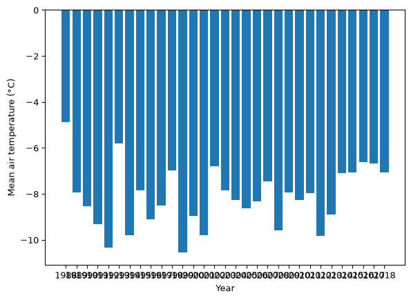
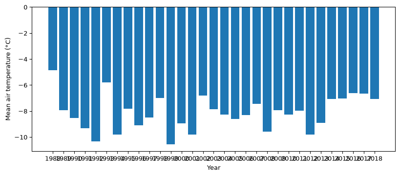
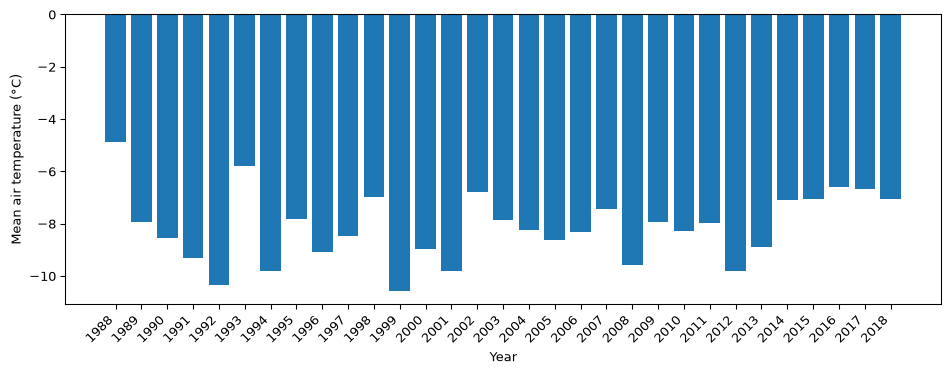
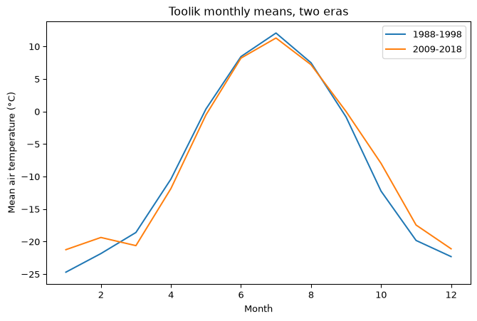
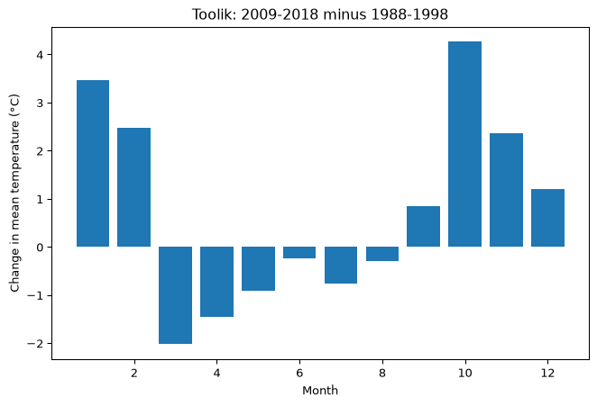
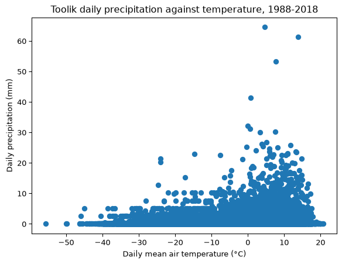

The page you typed them into said, in a box: you will learn how visualization really works on Day 7. Today, just enjoy turning numbers into a picture.
It is Day 7.
Since then you have spent six days getting data ready: filtered, sorted, cleaned, derived, grouped, joined, reshaped, and parsed. Yesterday you produced twelve numbers that say something genuinely surprising about the Arctic, and you read them off a printed table. This morning you find out what that shape was for.
By the end of this session you will be able to:
name the two objects every matplotlib picture is made of, the figure and the axes
control the size and shape of a figure with plt.figure(figsize=)
label a figure so that somebody who was not in the room can read it
put two series on one set of axes and tell them apart with a legend
fix the most common cosmetic failure in real plots, unreadable tick labels, with plt.xticks(rotation=) and plt.tight_layout()
say when a figure is honest but useless, and what to plot instead
Getting Started
Create a new notebook from the Command Palette (Create: New Jupyter Notebook), and confirm its kernel reads eds217_2026.
Save your notebook (Ctrl + S, or Cmd + S on macOS) as: Session_7A_Matplotlib.ipynb
Add a title cell (Markdown), updating the date to today:
# Day 7: Session 7A - The Anatomy of a Figure[Session Webpage](https://eds-217-essential-python.github.io/course-materials/interactive-sessions/7a_matplotlib.html)Date: 09/09/2026
Rebuild yesterday afternoon’s Toolik table. Every line below is one you wrote in 6C:
Code
import pandas as pdimport matplotlib.pyplot as plturl ='https://eds-217-essential-python.github.io/data/toolik_weather.csv'toolik = pd.read_csv(url)toolik['date'] = pd.to_datetime(toolik['Date'], format='%Y%m%d')toolik['year'] = toolik['date'].dt.yeartoolik['month'] = toolik['date'].dt.monthtoolik.shape
(11171, 24)
11,171 days of Arctic weather, with a real date column on it.
The picture you already made
Rebuild the twelve numbers from Day 1, and draw them the same way you drew them then:
That is a perfectly good figure, and on Day 1 you had no idea what any of those five lines were doing. Now you do, and the explanation takes one paragraph.
Figure and axes
Every matplotlib picture is two nested objects.
The figure is the canvas: a rectangle of a certain size, in inches, onto which everything gets drawn. The axes is the region inside it where data actually goes, together with its ticks, its tick labels, its axis labels and its title.
One figure can hold several axes. In this course, every figure you make will hold exactly one.
You did not create either object in the cell above. plt.plot() noticed that no figure existed, made one with default settings, and drew on it. Every plt command after that went to the same place, which is why plt.title() on line two knew which picture to title.
That convenience is also matplotlib’s biggest trap. If you run two plotting cells without saying where one figure ends and the next begins, both sets of data land on the same axes:
Two lines, one axes, no warning. Sometimes that is exactly what you want, and later in this session it will be. When it is not, plt.figure() is how you say start a new one.
Note
🐍 plt.show() is the line that says this figure is finished, draw it. In a Jupyter notebook you can usually leave it out and the figure still appears at the end of the cell. Type it anyway. It makes the boundary between one figure and the next explicit, and it stops the notebook printing a line of matplotlib internals above your picture.
Size and shape: plt.figure(figsize=)
Here is a figure the defaults get wrong. Thirty-one annual mean temperatures, drawn as bars:
Code
annual_means = toolik.groupby('year')['Daily_AirTemp_Mean_C'].mean()plt.bar(annual_means.index.astype(str), annual_means)plt.xlabel('Year')plt.ylabel('Mean air temperature (°C)')plt.show()

The data is fine. The picture is not: thirty-one year labels have been crammed into six and a half inches and the x-axis has turned into a smear of ink.
The default figure is 6.4 inches wide and 4.8 inches tall, which suits a scatter plot and suits almost nothing else. plt.figure() takes a figsize= argument, a tuple of (width, height) in inches, and it must come before the plotting command it applies to:
plt.figure(figsize=(10, 4))plt.bar(annual_means.index.astype(str), annual_means)plt.xlabel('Year')plt.ylabel('Mean air temperature (°C)')plt.show()

Same data, same four lines of drawing code, and now the labels have room. A wide, short figure is the right shape for anything with time along the bottom, which in environmental data science is most things.
✏️ Test your knowledge
Filter toolik to a single year of your choosing, then draw its daily mean air temperature as a line with date on the x-axis. Draw it twice: once with no plt.figure() call at all, and once inside a figure twelve inches wide and four inches tall. Give the second one an x-label, a y-label and a title.
Which of the two would you put in a report, and what specifically is wrong with the other one?
Tick labels that do not fit
Widening the figure bought you room. Often there is no room to buy, because the labels themselves are long: dates, station names, species names, states.
The fix is to turn them. plt.xticks(rotation=45, ha='right') rotates every tick label on the x-axis by 45 degrees and anchors its horizontal alignment at its right-hand end, so the label ends underneath the tick it belongs to instead of drifting off to the side.
Code
plt.figure(figsize=(10, 4))plt.bar(annual_means.index.astype(str), annual_means)plt.xticks(rotation=45, ha='right')plt.xlabel('Year')plt.ylabel('Mean air temperature (°C)')plt.tight_layout()plt.show()

Two new lines, and both are worth having as habits.
plt.tight_layout() goes last, after everything else has been added. Rotated labels stick out further than upright ones and matplotlib will happily crop them off the bottom of the figure; tight_layout() measures whatever you actually drew and resizes the axes so that all of it fits. Add it to any figure with rotated labels, long axis labels, or a title that runs to two lines.
Note
🐍 rotation=90 stands the labels straight up and needs no ha=. It is more compact than 45 degrees and harder to read. Use 45 unless you are desperate for width.
✏️ Test your knowledge
Build a Series holding the number of non-null Daily_Precip_Total_mm readings in each year, using .count() on a grouping by year. Draw it as bars in a figure ten inches wide and four tall, with the year labels rotated 45 degrees, and finish the cell with plt.tight_layout(). Label both axes and title it.
Then, in a markdown cell: name the four years you would refuse to put into an annual precipitation total, and say what number you would have reported for each of them if you had used .sum() without looking at this figure first.
Labels are not decoration
Every figure in this course needs three things, and there is no exception you will meet this week:
plt.xlabel('what is along the bottom, with units')plt.ylabel('what is up the side, with units')plt.title('what this figure is of')
The reason is not tidiness. A figure without labels is a picture whose meaning lives in the head of whoever made it, which means it stops meaning anything the moment it leaves your screen, including when it comes back to your own screen in three weeks. Temperature (°C) takes four seconds to type and it is the difference between a figure and a rectangle of ink.
The units matter as much as the words. trange_min is not a label. Minimum winter temperature (°F) is.
Two series, one axes, and a legend
Yesterday you split the Toolik record into its first eleven years and its last ten, and compared them month by month. Rebuild that table:
Now plot both eras on one axes. Two plt.plot() calls with no plt.figure() between them land on the same axes, which is the behaviour you were warned about earlier and is exactly what you want here. Give each line a label=, then call plt.legend() once to draw the key:
Code
plt.figure(figsize=(8, 5))plt.plot(comparison.index, comparison['early'], label='1988-1998')plt.plot(comparison.index, comparison['late'], label='2009-2018')plt.xlabel('Month')plt.ylabel('Mean air temperature (°C)')plt.title('Toolik monthly means, two eras')plt.legend()plt.show()

plt.plot(x, y, label='what this line is') # once per seriesplt.legend() # once per figure
The label= argument says what a series is called. plt.legend() collects every label on the axes and draws the key. Miss the plt.legend() line and nothing appears; miss a label= and that series is silently left out of the key.
When a figure is honest and useless
Look at the figure you just made and ask what it shows.
It shows that Toolik is cold in winter and less cold in summer, which you knew. The two eras are almost on top of each other. If somebody handed you that figure and claimed the site had changed, you would not believe them.
Now look back at the change column in the table. January is 3.5 °C warmer, October is 4.3 °C warmer, and July is 0.8 °C cooler. That is a real and striking result, and the figure has hidden it.
Nothing is wrong with the figure. The problem is that the quantity you care about is a difference of a few degrees, and you have drawn it on an axis that has to span thirty-five degrees to fit the seasonal cycle. The signal is 10% of the axis.
So plot the thing you actually care about. The difference is already a column:
Code
plt.figure(figsize=(8, 5))plt.bar(comparison.index, comparison['change'])plt.xlabel('Month')plt.ylabel('Change in mean temperature (°C)')plt.title('Toolik: 2009-2018 minus 1988-1998')plt.show()

There it is. Tall positive bars in January, February, October, November and December; negative bars from March through August; zero as the line the bars hang from, so the sign of each month is readable at a glance. The cold-season warming that took you a table and a paragraph yesterday is now visible in about a second.
This is the whole job
Choosing what to plot is a larger decision than choosing how to plot it, and it is the one nobody teaches you. Both figures above are correct. One of them answers the question.
When a figure looks like nothing is happening, do not reach for a bigger figure or a brighter colour. Ask what quantity your question is actually about, compute that quantity as a column, and plot it.
✏️ Test your knowledge
Build a table of mean Daily_Precip_Total_mm by month for the early and late eras, exactly as comparison was built for temperature, and add a change column.
Then make two figures: the two eras as two labelled lines with a legend, and the change on its own as bars. Both need a title, both axes labelled with units.
In a markdown cell, say which of the two figures you would show somebody, and whether the precipitation story is as clean as the temperature one. Check .isnull().sum() on the precipitation column before you commit to an answer.
Points instead of lines
plt.plot() draws a line through your points in the order they appear, which is right when the x-axis is time or anything else with an order, and wrong otherwise. When you are plotting one measurement against another, use plt.scatter():
Code
wet_days = toolik.dropna(subset=['Daily_Precip_Total_mm'])plt.figure(figsize=(7, 5))plt.scatter(wet_days['Daily_AirTemp_Mean_C'], wet_days['Daily_Precip_Total_mm'])plt.xlabel('Daily mean air temperature (°C)')plt.ylabel('Daily precipitation (mm)')plt.title('Toolik daily precipitation against temperature, 1988-2018')plt.show()

Ten thousand days, each one a dot. Nothing above about −20 °C is bone dry and nothing below it is wet, which is a fact about how much water cold air can hold, and it arrives here without anybody computing anything.
plt.scatter() takes x and y in the same order plt.plot() does, and everything you have learned this session works on it unchanged: figsize, labels, title, legend, rotation, tight_layout. That is the point of learning the anatomy rather than the commands.
Note
🐍 Ten thousand overlapping dots is a lot of ink for what it shows, and matplotlib gives you a pile of keyword arguments for controlling colour, marker shape and transparency to deal with it. You will not need most of them. The next session shows you a library that makes better choices than you would, from the same DataFrame, in one line.
Key points
Every matplotlib picture is a figure (the canvas) containing an axes (where the data goes). You get both for free if you do not ask for them.
plt.figure(figsize=(width, height)) sets the canvas size in inches, and must come before the plotting call.
Plotting commands with no plt.figure() between them stack on the same axes. That is a feature when you want two series and a bug when you do not.
Always label: plt.xlabel(), plt.ylabel(), plt.title(), with units in the axis labels.
Two series on one axes need a label= on each and one plt.legend() call.